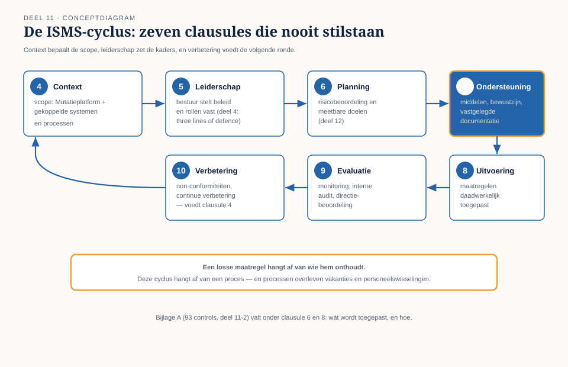
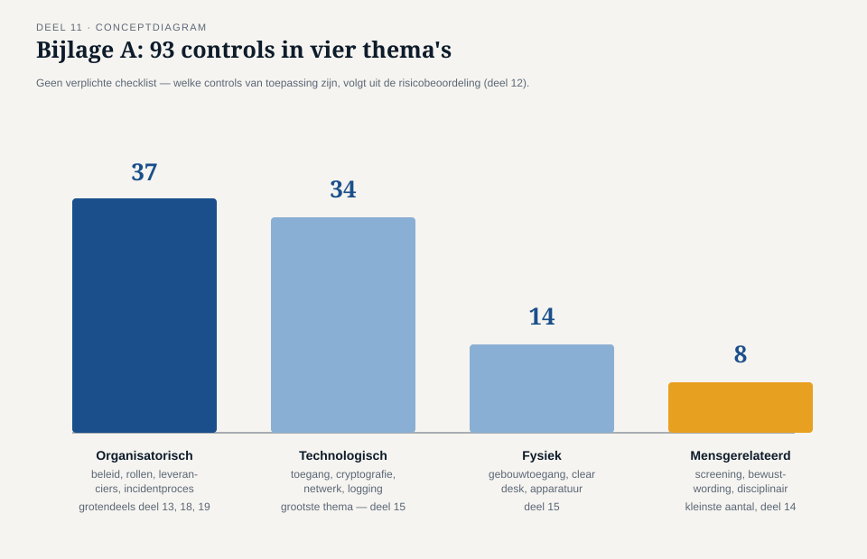
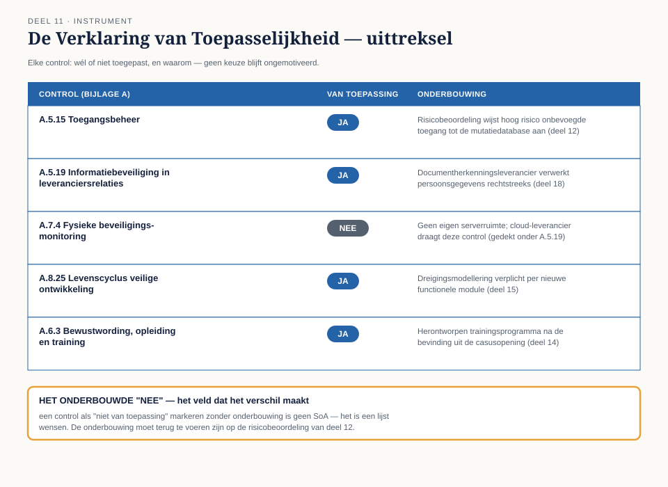

Deel 11 — Van losse maatregelen naar een managementsysteem
Slidedeck · Ductus-cursus Informatiebeveiliging en privacy · niveau 2 · deel 11 van 22 · 25 slides
Slide 1 — Titel
Informatiebeveiliging en Privacy
Deel 11 · Niveau 2 · Professional
Van losse maatregelen naar een managementsysteem
Slide 2 — Niveau 2 begint
Merels nulmeting heeft iets in beweging gezet.
Het Programma Mutatieplatform. Karin leidt. Tarik architect.
Merel: voor het eerst een echt mandaat.
Slide 3 — Merels eerste instinct
Een lijst maken van alle ontbrekende losse maatregelen.
Karin stopt haar.
Slide 4 — Karins vraag
"Over een jaar heb je weer tien nieuwe losse dingen.
Ik wil iets dat blíjft werken —
ook als jij op vakantie bent."
Slide 5 — Maatregel vs. managementsysteem
Een maatregel: waardevol, op zichzelf.
Een managementsysteem: het proces eromheen.
Wie bepaalt wat nodig is? Wie controleert of het werkt?
Wat als de situatie verandert?
Slide 6 — ISO/IEC 27001:2022
Geen keurslijf van verplichte techniek.
Een raamwerk voor besluitvorming en verantwoording.
Slide 7 — Opdracht 11.1
Vier voorbeelden. Losse maatregel of managementsysteemelement?
Slide 8 — De Harmonized Structure
Zeven clausules. Gedeeld met élke moderne ISO-managementsysteemnorm.
(Ook ISO 27701 — het scharnier naar privacy, deel 27.)

Slide 9 — Clausule 4-5
4 Context — externe factoren, scope
5 Leiderschap — bestuur, beleid, rollen
Slide 10 — Clausule 6-7
6 Planning — risicobeoordeling, doelen (deel 12)
7 Ondersteuning — middelen, bewustzijn, gedocumenteerde informatie
Slide 11 — Clausule 8-9-10
8 Uitvoering — de maatregelen daadwerkelijk toepassen
9 Evaluatie — monitoring, audit, directiebeoordeling
10 Verbetering — non-conformiteiten, continue verbetering
Slide 12 — Een cyclus, geen lijst
Context → planning → ondersteuning → uitvoering
→ evaluatie → verbetering → terug naar context
Slide 13 — Opdracht 11.2
Vier situaties. Welke clausule?
PAUZE
Slide 14 — Bijlage A: 93 controls

- Organisatorisch (37)
- Mensgerelateerd (8)
- Fysiek (14)
- Technologisch (34)
Slide 15 — Geen verplichte checklist
Gebaseerd op je eigen risicobeoordeling (deel 12).
Wél toepassen: onderbouwen. Niet toepassen: ook onderbouwen.
Slide 16 — De Verklaring van Toepasselijkheid

Control — van toepassing? — onderbouwing
Een van de belangrijkste documenten van het hele ISMS.
Slide 17 — Terug naar deel 10
"Een onderbouwd nee weegt zwaarder dan een oppervlakkig ja."
Hier: geformaliseerd in een verplicht ISO-document.
Slide 18 — Opdracht 11.3
Onderbouw: is "cryptografisch beleid" van toepassing op het Mutatieplatform?
Slide 19 — Wat certificering wél betekent
Een onafhankelijke auditor: het proces is aantoonbaar op orde.
Slide 20 — Wat certificering niet betekent
Niet: "we zijn honderd procent veilig."
Het certificeert het proces, geen garantie van nul risico.
Slide 21 — Opdracht 11.4
Corrigeer: "we zijn straks gecertificeerd, dus 100% veilig."
Slide 22 — Merels eerste stap: scope
Alleen het Mutatieplatform? De hele organisatie?
Te ruim: onbeheersbaar. Te smal: risico's buiten beeld.
Slide 23 — De gekozen scope
Mutatieplatform + directe koppelingen + de processen die het raken.
Vastgelegd — niet alleen mondeling afgesproken (clausule 7).
Slide 24 — Opdracht 11.5
Wat valt buiten scope? Welk risico blijft daardoor mogelijk buiten beeld?
Slide 25 — Vooruitblik
Deel 12: risicobeoordeling en risicobehandeling —
clausule 6 in de praktijk